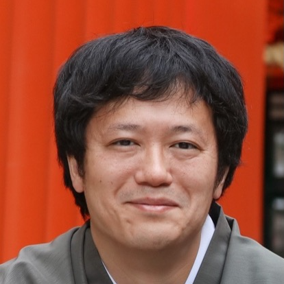

Tuning microswimmer motility by liposome encapsulation: A membrane clutch enables controlled swimming and cargo transport
Science Advances, volume 12(48), aeh2994, 2026

Associate Professor
PhD (Engineering)
Department of Mechanical Science and Bioengineering
Graduate School of Engineering Science, The University of Osaka
Science Advances, volume 12(48), aeh2994, 2026
Journal of the Royal Society Interface, accepted
Biophysics and Physicobiology, volume 23(2), e230019, 2026 (selected as Cover)
Chinese Physics Letters, volume 43(5), 050901, 2026
Physical Review Fluids, volume 11, 023102, 2026
Biophysical Journal, volume 124, issue 23, pp. 4205-4214, 2025 (Press release: Osaka University News)
PLOS Computational Biology, volume 20(8), e1012312, 2024
Integrative Biology, volume 16, zyae012, 2024
Cellular and Molecular Bioengineering, volume 17, pp. 165-176, 2024
Proceedings of the National Academy of Sciences of the United States of America, volume 120 (45), e2310939120, 2023
PLOS One, volume 17 (11), e0276909, 2022
Scientific Reports, volume 12, 14466, 2022
Biophysical Journal, volume 121, pp. 2921-2930, 2022 (selected as Cover)
Physics of Fluids, volume 34, 063309, 2022
Physical Review Fluids, volume 7, 063601, 2022
Communications Biology, volume 5, 361, 2022
Experimental Cell Research, volume 404, issue 1, 2021
Physical Review Letters, volume 126, 078001, 2021
Physical Review Fluids, volume 5, 123603, 2020
Soft Matter, volume 16, pp. 6484-6492, 2020 (selected as Back cover)
Journal of Biomechanical Science and Engineering, 20-00102, 2020
Biochemical and Biophysical Research Communications, volume 530, issue 3, pp. 527-532, 2020
Chinese Physics B (Special issue "Active Matter Physics"), volume 29, No. 6, 064705, 2020
Biochemical and Biophysical Research Communications, volume 521, issue 2, pp. 527-532, 2020
Physical Review Fluids, volume 4, 113601, 2019
Nature Communications, volume 10, 4696, 2019 (Press release: Osaka University News)
Nature Communications, volume 10, 2444, 2019
Soft Matter, volume 15, pp. 3964-3871, 2019 (selected as Inside back cover)
IMA Journal of Applied Mathematics, volume 83, issue 4, pp. 767-782, 2018
Physical Review Letters, volume 120, 188101, 2018
Physical Review Letters, volume 119, 198002, 2017 (Editors' suggestion: highlighted in APS Physics Synopsis, Oxford Physics News)
Journal of Fluid Mechanics, volume 806, pp. 102-128, 2016
Science and Technology of Advanced Materials, volume 17, No. 1, pp. 454-461, 2016
Proceedings of the Royal Society of London A, volume 472, issue 2185, 2016
Journal of Fluid Mechanics, volume 786, pp. 110-127, 2016
Physical Review E, volume 92 (6), 063027, 2015
Journal of Fluid Mechanics, volume 762, pp. 288-301, 2015
Physical Review E, volume 90 (4), 043009, 2014
Journal of Biomechanical Science and Engineering, 14-00039, 2014
Mechanobiology — Methods and Protocols Methods in Molecular Biology 2600 Springer Protocols, 2023
Frontiers in Computational Fluid-Structure Interaction and Flow Simulation Modeling and Simulation in Science, Engineering and Technology Springer Nature Switzerland, 2018
Jun 2021 – present
Graduate school of Engineering Science, The University of Osaka, Japan
working with Prof. Shinji Deguchi
Aug 2018 – Jun 2021
Graduate school of Engineering Science, The University of Osaka, Japan
worked with Prof. Shinji Deguchi
Feb 2018 – present
Apr 2016 – Jul 2018
Rudolf Peierls Centre for Theoretical Physics, University of Oxford, UK
worked with Prof. Julia M. Yeomans and Prof. Ramin Golestanian
Apr 2014 – Mar 2016
Japan Society for the Promotion of Science
Apr 2013 – Mar 2016
Department of Bioengineering and Robotics, Tohoku University, Japan
BFSL (Biological Flow Studies Laboratory)
Supervisor: Prof. Takuji Ishikawa
Oct 2014 – Jun 2015
Experimental Physics, Saarland University, Germany
Supervisor: Prof. Christian Wagner
Apr 2011 – Mar 2013
Department of Bioengineering and Robotics, Tohoku University, Japan
PFSL (Physiological Flow Studies Laboratory)
Supervisor: Prof. Takami Yamaguchi
Mar 2008
The University of Sydney, Australia
Apr 2007 – Mar 2011
Department of Mechanical and Aerospace Engineering, Tohoku University, Japan
PFSL (Physiological Flow Studies Laboratory)
Supervisor: Prof. Takami Yamaguchi
Kanazawa University High School
April 2026
The Commendation for Science and Technology by the Minister of Education, Culture, Sports, Science and Technology, Japan
Nov 2019
AP Biomech 2019 (Asian-Pacific Association for Biomechanics), Taiwan
Mar 2018
JSME (The Japanese Society of Mechanical Engineers), Tokyo
Mar 2016
Graduation ceremony, Tohoku University
Jun 2014
DynaCaps2014, Compiègne, France
Mar 2014
Advances in Computational Fluid-Structure Interaction and Flow Simulation, Tokyo, Japan
Mar 2013
6th East Asian Pacific Student Workshop on Nano-Biomedical Engineering, Singapore
Jan 2012
22nd JSME Conference on Frontiers in Bioengineering, Tsu, Japan